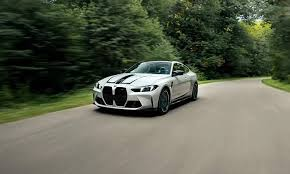

BMW is a German multinational company that designs and manufactures luxury vehicles and motorcycles.
The name BMW stands for "Bayerische Motoren Werke", which translates to "Bavarian Motor Works" in English.
Brands Owned:
BMW
MINI
Rolls-Royce Motor Cars

Sedans & Coupes:
3 Series – Compact executive sedan, one of BMW's most popular lines.
5 Series – Mid-size luxury sedan.
7 Series – Full-size luxury sedan, flagship model with high-end tech.
4 Series, 6 Series, 8 Series – Coupes and Gran Coupes with sporty and elegant styling.
| Name | model | price |
|---|---|---|
| m5 | 2025 | 23000000 |
| m4 | 2024 | 2200000 |
| m2 | 2024 | 2000000 |
| m4 compction | 2024 | 2000000 |